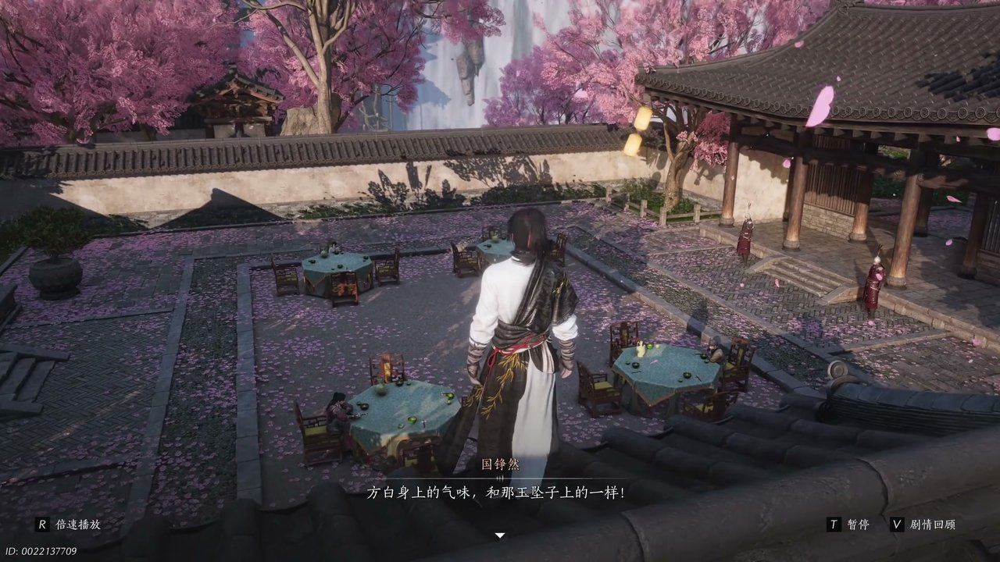
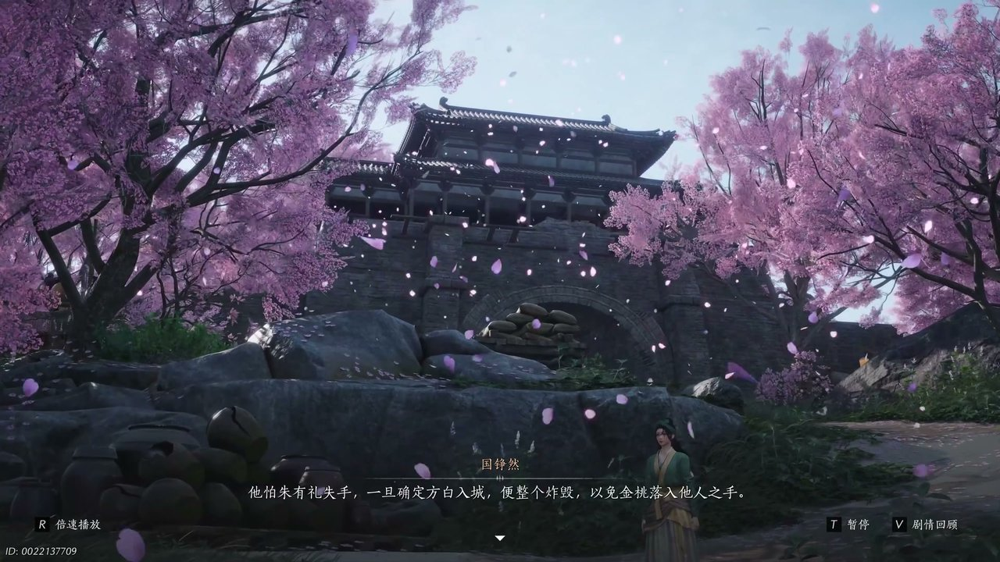
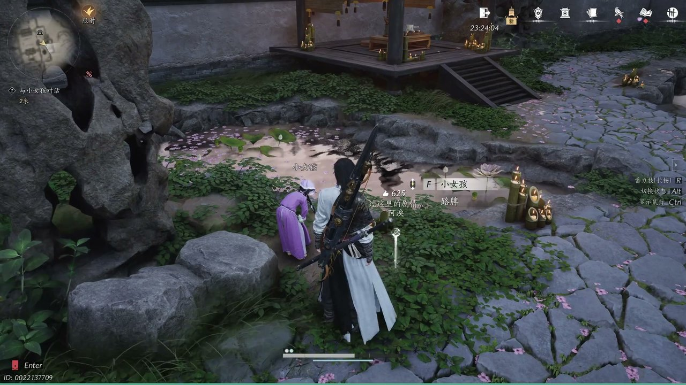
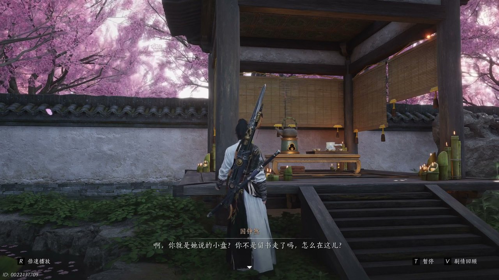
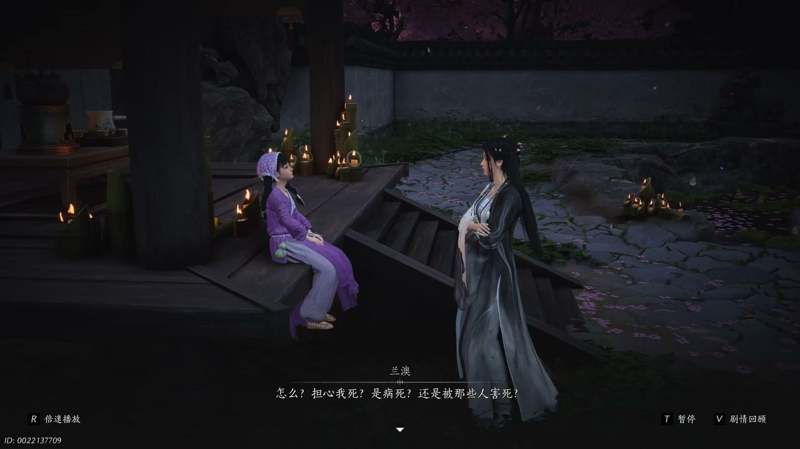

燕云背后的故事：第17集 桃花源
燕云背后的故事：第17集 桃花源

我将严格遵循既定格式、字数规范与剧情时序，依托SRT字幕素材梳理完整剧情，打磨开篇回顾、六段正文与结尾总结，贴合官方设定平铺叙事。

桃林塞内外氛围紧绷，江湖众人齐聚庭外，个个神色激愤、战意凛然，纷纷声讨方白的所作所为。一众江湖人围聚议论，言辞铿锵，笃定说道：“没错方白罪大恶极”，细数其残害多位江湖好汉的罪状，扬言若方白肯自行了断，便留其全尸，再依照江湖规矩裁定金桃归属。有人高声附和：“总之必不让内堂的朝廷走狗得手”，决意纯粹以江湖规矩了结纷争，不让朝堂势力插手分羹。人群躁动不休，人人摩拳擦掌，欲冲入内堂对峙。与此同时，监官仆人慌张奔出，面色惨白、身躯颤抖，慌忙禀报内堂死伤惨重的惨状，龙武军见状不耐呵斥，抬手示意将尸体抬走丢弃，规避晦气。少东家伫立一旁，静观乱象，暗自判断内堂已然爆发恶战，心中开始思索混入内堂探查真相的办法。

少东家环视周遭局势，理清眼前困局，桃林中各路豪杰皆持有入场邀约，唯独自己无从进入内堂。他低头摩挲着掌心捡到的玉坠子，指尖触碰到玉佩微凉的纹路，瞬间捕捉到熟悉气息，瞬间回想方白身上独特的药香。少东家低声自语：“我在桃林中捡到的玉坠子，借着怀玉坠子的理由呵”，心中快速敲定混入内堂的计策，打算凭借玉坠作为切入点，寻访玉佩主人探寻线索。可他抬眸望去，原本连通内外的木桥已然断裂，彻底阻断通行道路。视野轮转，周遭光景骤然更迭，反复回归日出时分，时空错乱的异象让少东家神色凝重。他迅速复盘眼前变故，沉声推断：“有人炸毁了桃林塞，让这里成了水下废者”，爆炸自岸边蔓延全域，声势连绵不绝。

少东家立于残破的桃林塞旧址，望着满目疮痍的水域废墟，逐一拆解幕后布局。他结合眼前惨状与各方势力动向，笃定开口：“是朱温，他怕朱由礼失手”，知晓朱温早已布下死局，一旦确认方白入城，便会即刻炸毁整片桃林塞。此举只为杜绝意外，严防金桃秘宝落入旁人手中，彻底断绝群雄夺宝的可能。少东家望着茫茫湖水，满心疑虑，轻声呢喃：“难道方白与金桃都葬身湖底了”，随即迅速收敛心绪，清醒认知唯有找到方白，才能破解金桃的全部秘密。他再次比对气息线索，明确分辨：“方白身上有香味，玉坠子上也有”，当即定下追查方向，循着特殊药香，找寻玉佩的持有者，以此解锁更多隐秘线索。

少东家循着药香一路探寻，最终在林间找到一名正在煎药的小女孩，静静驻足观察孩童的一举一动。孩童蹲坐在地面，低头摆弄着地上的糖果，全然不顾落在糖块上的蚂蚁，模样懵懂单纯。少东家缓步上前，语气温和地开口打趣：“掉地上的糖可不能吃了哟”，又笑着提醒：“蚂蚁蚂蚁不能吃”。随后他顺势落座，心态松弛下来，笑着说道：“嘿嘿这东道让我也坐坐，咱们呀，请麻叶吃个英雄宴”。他凑近孩童，分享趣味小事，轻声说道：“糖和脆锅巴一起吃，会在嘴里放烟花哦”，耐心引导孩童尝试，拉近彼此距离。待氛围缓和，少东家拿出怀中玉坠，轻声询问：“这是你的玉坠子吗”，同时确认玉佩上的药香，正是眼前孩童熬制草药散发的气息。

少东家手持玉坠，细细观察玉佩上镌刻的水字纹路，瞬间联想到此前在芥子卢素怀微处见过的月字玉佩，瞬间串联起线索。他看向眼前的孩童，缓缓发问：“你认识他吗”，稍作停顿后恍然大悟，轻声道出：“呵你就是他说的小盘”。他接连追问孩童的行踪与身份，疑惑问道：“你不是刘叔走了吗，怎么在这儿”，又看清孩童身前药炉，继续问询：“你是大夫，不是病人，那你在给谁治病”。一番交谈试探后，少东家锁定关键线索，郑重询问：“你认识方白吗”，结合气息线索笃定判断：“那就只有你和蓝傲有这个药味”。他看穿孩童神色躲闪、言语拘谨的模样，瞬间洞悉真相，低声说道：“你被胁迫，怪不得你不能多说”，心中已然摸清孩童的处境，知晓其身不由己。

林间微风轻拂，暗处的蓝傲缓缓现身，目光清冷地看向少东家与孩童，出声打断二人对话。她看向身旁沉默的孩童，轻声叮嘱：“小哑巴小哑巴嘘”，语气平淡却带着不容抗拒的威慑。随后她转头直视少东家，神色漠然，淡淡说道：“不闹也不跑，不过过了今天我也用不着你了”。面对少东家的探查与追问，蓝傲毫无惧色，坦然直言：“你根本救不了我，只有金桃才有可能”。她语气裹挟着无尽无奈与执拗，继续说道：“是病死还是被那些人害死，我不会死的，我一定会拿到”。寥寥数语道尽她的执念，身患顽疾的她，将所有活下去的希望，尽数寄托在金桃秘宝之上，甘愿奔赴这场凶险的夺宝棋局。
这一集看下来，我最大的感受就是桃源秘境从非净土，众生执念皆为浮生苦局。上一集里我们只知道秘境异象、群雄夺宝、天命博弈三条线索，到了这一集，我们摸清势力布局、气息线索、身份疑云三条核心线索。炸毁桃林塞的真正目的究竟是什么？蓝傲身患怪病的根源从何而来？方白的真实身份到底藏着怎样的秘密？所有线索尽数收拢，秦川棋局愈发清晰，朱温布下绝杀死局，蓝傲为求生执念金桃，少东家循着蛛丝马迹不断逼近真相。下一集，真假方白身份彻底揭晓，惊涛掌隐秘过往浮出水面，少东家将解锁更多江湖秘辛。这场以命搏生的棋局能否被打破？桃源秘境之下究竟藏着多少不为人知的过往？评论区说说你的猜想，点赞关注，下一集解锁身份终揭晓、旧秘层层破的高能剧情！
关于我们
📱 公众号名称：三天游戏
✍️ 作者：曾三天
扫码关注公众号，获取每日最新资讯

商务合作与版权
商务合作 / 内容投稿 / 品牌推广
请关注公众号「三天游戏」后台留言联系
版权声明：本文由作者整理，转载需注明出处。